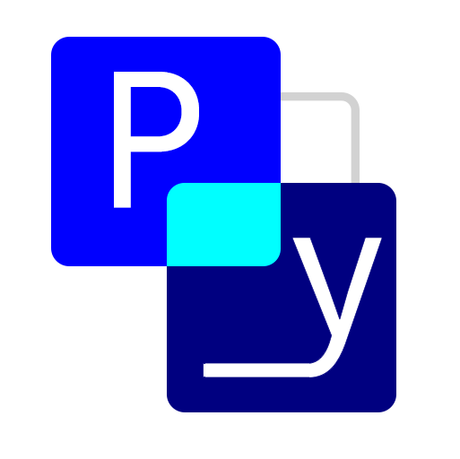
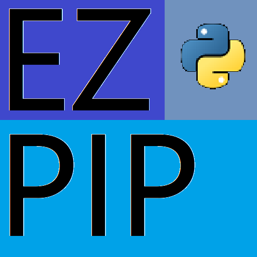

CodeCrafter

Python Visual Programmer
基于 Python 语言中的 tkinter GUI 工具的可视化编程软件
底层基于
tkintertools
View in GitHub

Easy PyPI
Easy PyPI可以理解为pip.exe的图形化扩展 它的大部分功能仍基于pip.exe
View in GitHub
你也想加入我们？（满足其一即可）
1 有HTML CSS JS基础
2 有任何一种编程语言基础 最好常见
3 有GUI开发基础
4 （最好）有汇编、C语言开发基础
如果满足其上任意一条，请发送邮件至1825456084@qq.com；并写出自己满足哪一条
点我发送邮件
CodeCrafter-TL
真_人工智障
NTF404
Gaoxuan
Python之星-刘皓月
ChenXiaoThi
事创造键啊
*由于缺少资料，这里并不完全
真_人工智障
弃坑啦
您可以在此完善甚至接手一些烂尾项目
这里的交易内容是抽象的，您用您的精力换取他人的灵感
tttk
一个tkinter的增强库
音乐地带
这个软件可以免费下载网易云上所有能在线听的音乐
（已停更）
我的官网
博客园
BiliBili
语痴博客
零启
小康2022
tkintertools
tkinter的一个辅助开发模块
开发秘籍: tkinter 桌面应用程序
点我跳转！
GitHub
CSDN